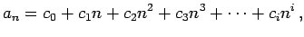
where
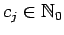,
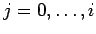.
This polynomial
is codified by its degree | 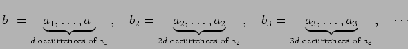 |
| 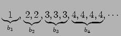 |
Given and we want to obtain the corresponding 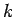th integer in the sequence . For example, with and we have 3 for 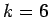; we have 4 for 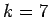. With and 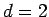, we have 2 for ; we have 3 for .
The first line of input contains C (0 < C < 100 ), the number of test cases that follows.
Each of the C test cases consists of three lines:
It is assumed that the polynomial is a polynomial of degree less or equal than 20 ( 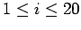) with non-negative integer coefficients less or equal than 10000 ( 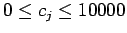, ); 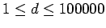; 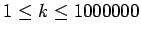.
The output is a sequence of lines, one for each test case. Each of these lines contains the th integer in the sequence for the corresponding test case. This value is less or equal than 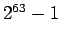.
2 4 3 0 0 0 23 25 100
1 0 1
1
6
1866
3
Problem setter: Delfim Torres